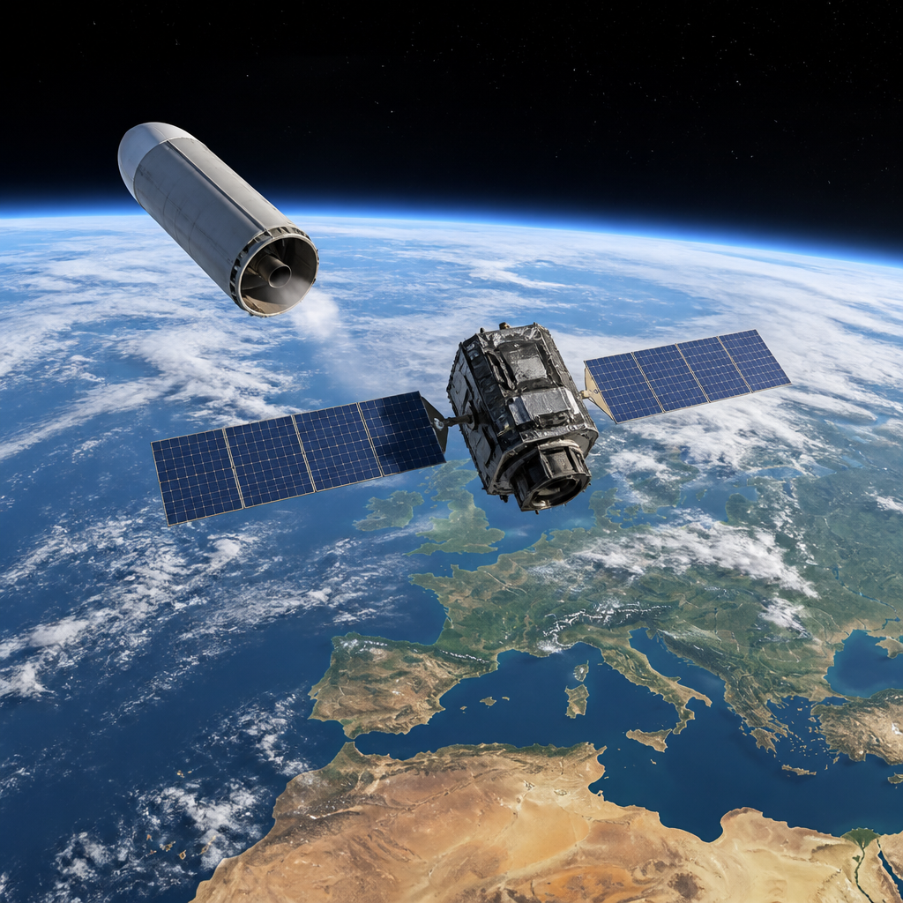
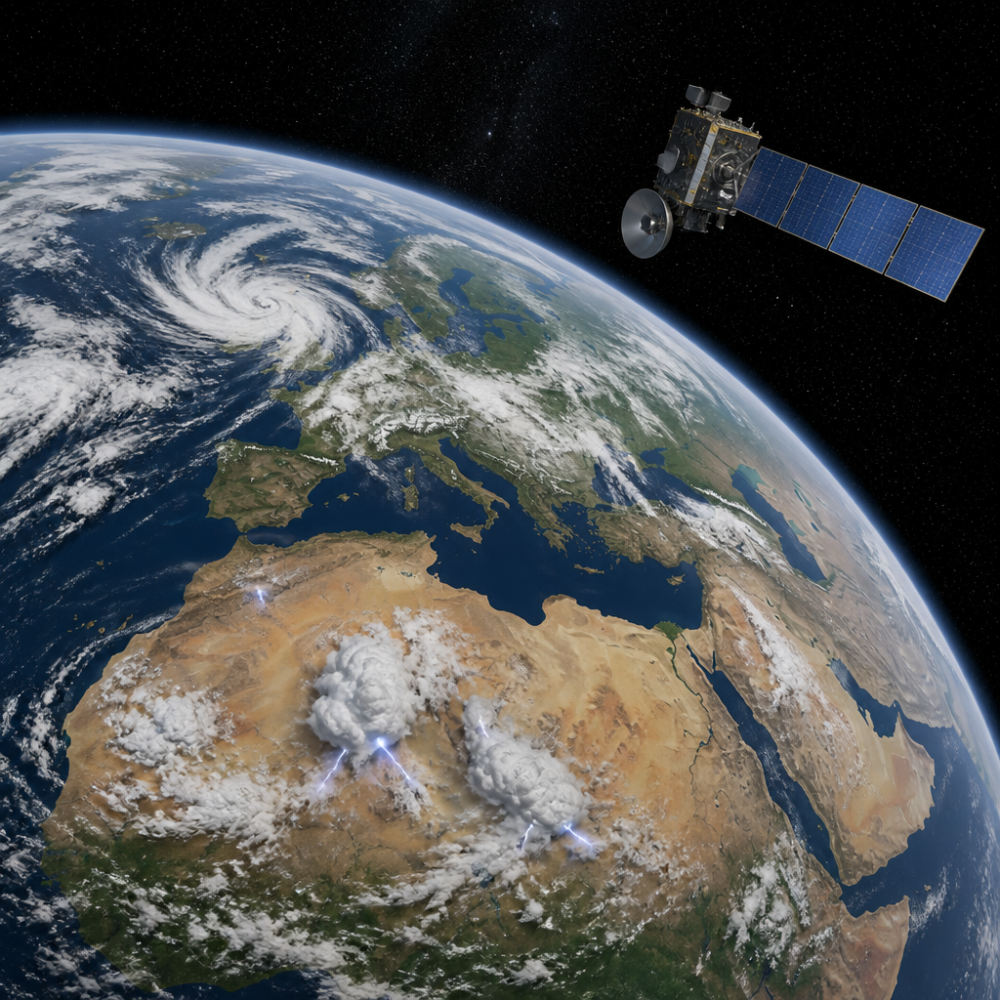

Il terzo satellite della costellazione Meteosat di terza generazione partirà con Ariane 6 e porterà nuove capacità per seguire temporali e fenomeni in rapida evoluzione.
MTG-I2, il prossimo satellite Imager della terza generazione Meteosat, è pronto al decollo a bordo di un lanciatore Ariane 6. La partenza è prevista dallo Spazioporto europeo nella Guyana francese, durante il volo VA270. Con questo satellite si completerà la prima famiglia della costellazione MTG, progettata per fornire dati utili alle previsioni meteorologiche sull’Europa e sul Nord Africa.
Il lancio sarà trasmesso giovedì 27 agosto su ESA WebTV e sul canale YouTube dell’ESA. La diretta comincerà alle 21:42, nell’orario dell’Europa centrale, mentre il primo tentativo di lancio è previsto alle 22:10. La finestra di lancio, cioè l’intervallo di tempo disponibile per effettuare il decollo, resterà aperta per due ore e mezza. L’orario locale indicato per il primo tentativo è le 17:10.
MTG-I2 sarà il terzo satellite della costellazione MTG e completerà la prima famiglia della missione. Insieme, questi satelliti produrranno immagini per le previsioni meteorologiche europee con un livello di dettaglio senza precedenti. La missione mette inoltre a disposizione dei servizi meteorologici europei nuovi prodotti di dati e nuove capacità di osservazione.
Una delle applicazioni indicate è il nowcasting, cioè il monitoraggio e la previsione del tempo nelle ore immediatamente successive. È un’attività particolarmente importante quando si devono seguire eventi meteorologici severi che evolvono rapidamente e quando occorre emettere allerte in tempi utili.
I satelliti MTG-Imager trasportano due strumenti. Il primo è il Lightning Imager, uno strumento dedicato al rilevamento dei fulmini. Per i satelliti meteorologici europei introduce la capacità di monitorare continuamente l’attività elettrica nell’atmosfera.
Il secondo strumento è il Flexible Combined Imager. Il suo compito è costruire un quadro dei sistemi meteorologici che cambiano velocemente. Queste osservazioni possono sostenere l’emissione tempestiva di avvisi meteorologici. Dalla sua posizione geostazionaria, cioè una posizione nello spazio da cui il satellite osserva costantemente la stessa regione terrestre, MTG-I2 potrà acquisire l’intera superficie visibile della Terra in dieci minuti.

Il satellite si troverà a 36 000 chilometri sopra l’equatore. Da questa distanza, il Flexible Combined Imager potrà osservare Europa e Nord Africa ogni due minuti e mezzo. La combinazione fra una visione dell’intero disco terrestre visibile e aggiornamenti più frequenti sull’area europea e nordafricana è una delle capacità previste per il supporto alle previsioni.
Quello di MTG-I2 sarà il nono lancio del razzo europeo pesante Ariane 6. Il lanciatore decollerà con due motori a propellente solido basati sul modello P120C. Il propellente solido è un combustibile conservato in forma solida all’interno del motore. Ariane 6 porterà il satellite verso un’orbita di trasferimento geostazionaria, un’orbita intermedia usata per raggiungere la destinazione geostazionaria.
Sarà la prima missione di Ariane 6 verso questa destinazione e anche la distanza più grande raggiunta finora dal lanciatore. L’ESA gestisce il programma di sviluppo di Ariane 6 con l’obiettivo di garantire all’Europa un accesso autonomo allo spazio. Per il volo VA270, Arianespace è il fornitore del servizio di lancio.
La copertura del lancio inizierà alle 21:42. Il programma indica il decollo alle 22:11, mentre il primo tentativo è previsto alle 22:10. Dopo il lancio sono previste la separazione dei booster, cioè i motori aggiuntivi, il distacco della carenatura che protegge il satellite e le fasi di accensione e spegnimento dei motori principali e dello stadio superiore. La separazione di MTG-I2 e l’acquisizione del suo segnale sono indicate alle 22:47. La diretta terminerà alle 22:57.
Questo articolo l'hai letto sul blog di Meteo Radar: un'app che ti mostra da dove vengono i numeri, invece di limitarsi a dartelo. E ogni mattina ne trovi uno nuovo come questo.